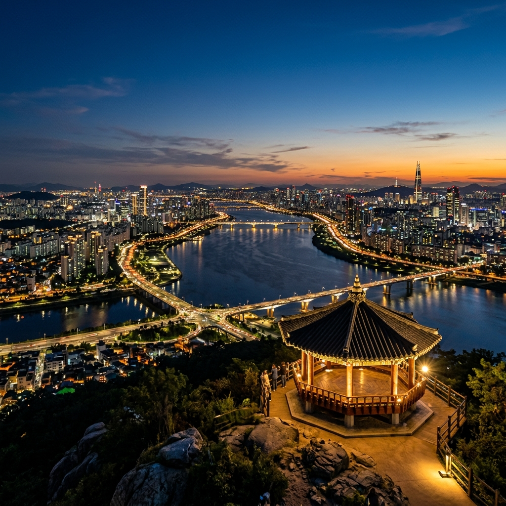
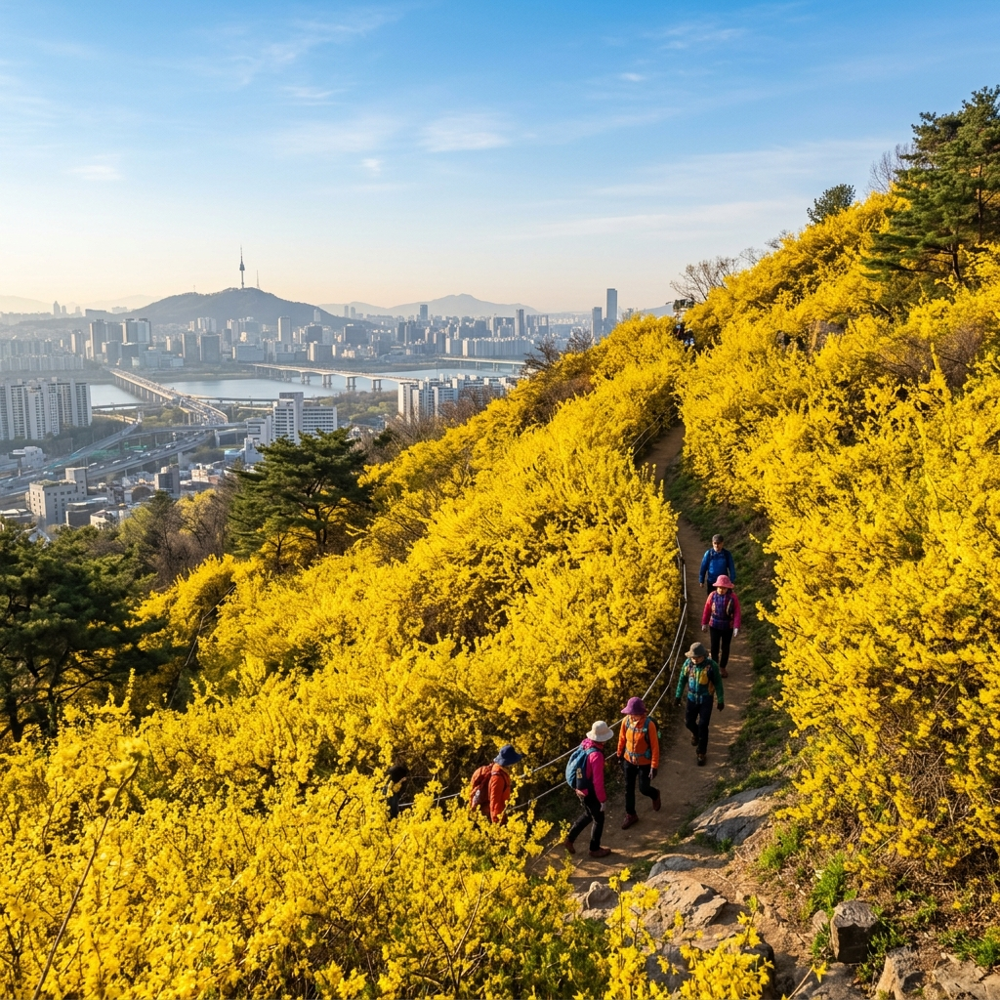
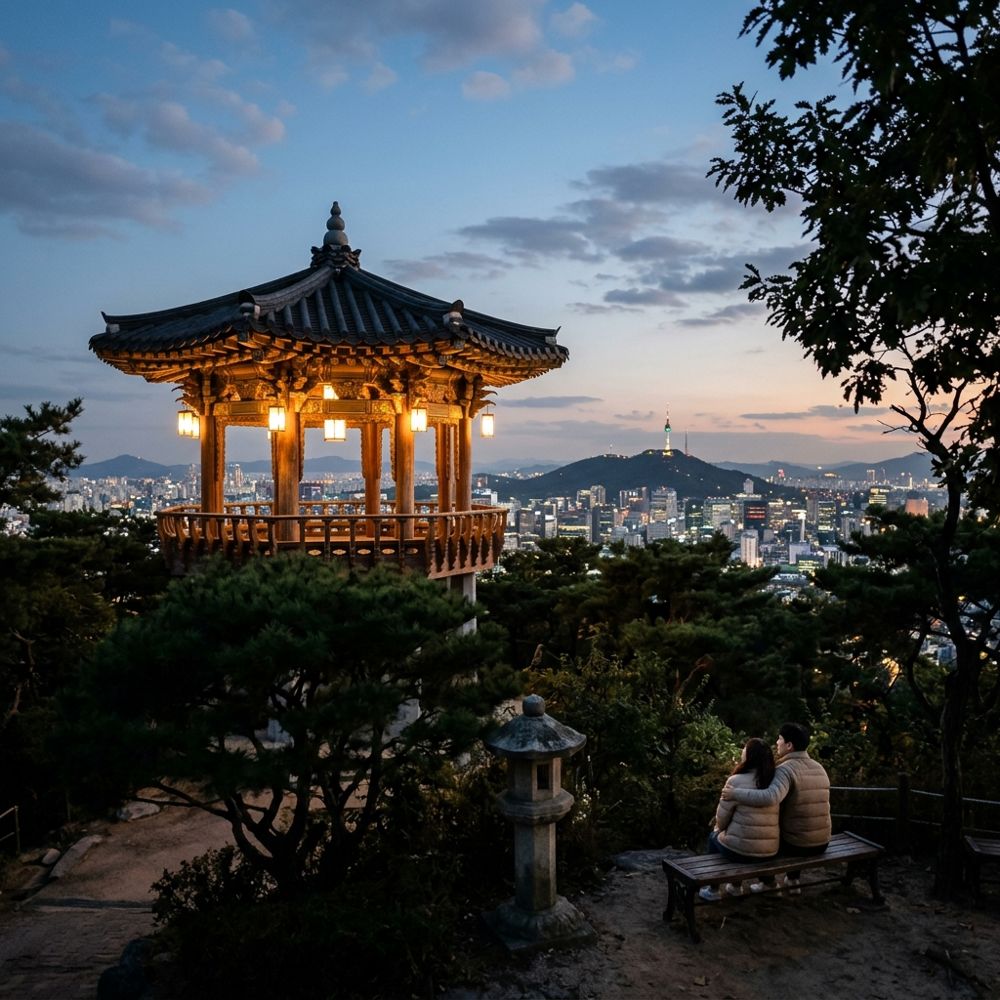

서울 성동구 응봉동에 자리한 응봉산은 해발 95m의 낮은 산입니다.
그런데 이 95m짜리 동산이 서울에서 가장 극적인 야경 중 하나를 품고 있다는 사실을 알고 계신가요?
비결은 위치입니다. 한강과 중랑천이 만나는 합수부가 정상 바로 아래에 위치하고 있어, 두 물줄기가 모이는 지점과 그 주변 도심 풍경을 한 프레임에 담을 수 있습니다.
서울 어디서도 쉽게 볼 수 없는 독특한 구도의 야경입니다.
'응봉'이라는 이름은 조선 시대에 이 산에서 사냥용 매(鷹)를 날렸다는 기록에서 왔다고 합니다.
지금은 사냥 대신 카메라를 든 사람들이 매일 저녁 이 산을 오릅니다.
응봉산의 최대 장점 중 하나는 지하철역에서 걸어서 오를 수 있다는 점입니다.
경의중앙선·3호선이 모두 정차하는 옥수역 2번 출구로 나오면 응봉공원 입구 안내판을 금세 찾을 수 있습니다.
여기서 완만한 오르막길을 15분 정도 걸으면 정상 팔각정에 도달합니다.
경사가 급하지 않고 길도 잘 정비되어 있어 운동화만 있으면 충분합니다.
야경을 목적으로 한다면 일몰 40분 전쯤 출발하는 것이 가장 좋습니다.
그러면 정상에서 노을을 기다리며 잠시 쉬다가, 어스름이 깔리면서 야경이 서서히 펼쳐지는 과정을 온전히 즐길 수 있습니다.
| 구간 | 소요 시간 | 비고 |
|---|---|---|
| 옥수역 2번 출구 → 공원 입구 | 약 2분 | 평지 |
| 공원 입구 → 중간 쉼터 | 약 8분 | 완만한 계단 |
| 중간 쉼터 → 정상 팔각정 | 약 5분 | 약간 경사 |

정상에 서면 가장 먼저 눈에 들어오는 것은 발아래로 펼쳐지는 두 강의 만남입니다.
서쪽으로는 한강 본류가 넓게 흐르고, 북동쪽에서는 중랑천이 굽이쳐 내려오다 한강과 합류하는 지점이 선명하게 보입니다.
밤이 되면 성수대교와 동호대교의 주황빛 가로등이 강물에 반사되고, 강 건너 강남 빌딩들의 불빛이 수평으로 펼쳐집니다.
남쪽으로 눈길을 돌리면 멀리 남산서울타워의 실루엣이 보이는 날도 있습니다.
이 모든 장면이 한 시야 안에 들어오는 구도 덕분에, 응봉산은 사진 작가들 사이에서 '서울 야경 필수 코스'로 꼽힙니다.
사실 응봉산을 서울 시민들에게 가장 널리 알린 건 야경이 아니라 개나리입니다.
3월 하순에서 4월 초 사이, 응봉산 전 사면이 노란 개나리로 뒤덮이는 광경은 서울에서 손꼽히는 봄꽃 절경입니다.
규모가 약 5만 주에 달한다고 알려져 있으며, 한창 절정일 때는 입구에서부터 정상까지 온통 노란 터널이 이어집니다.
개나리 시즌에는 주말 오전 수천 명이 몰리므로, 오전 이른 시간이나 평일 방문을 추천합니다.
개나리와 한강 뷰를 동시에 담은 사진은 이 시기에만 찍을 수 있는 응봉산의 트레이드마크입니다.
응봉산은 어느 계절에 방문해도 전혀 다른 야경을 보여줍니다.
봄(4~5월): 일몰이 늦어 퇴근 후 방문해도 노을을 볼 수 있습니다. 나무에 새잎이 나기 시작하는 시점이어서 발밑 풍경도 싱그럽습니다.
여름(6~8월): 일몰이 오후 8시 전후로 가장 늦습니다. 강물 위로 열기가 올라오면서 은은한 안개가 깔리는 여름 특유의 분위기가 있습니다.
가을(9~11월): 10월 이후 단풍이 물들기 시작하고, 대기가 맑아 야경의 선명도가 한 해 중 가장 높아지는 시기입니다.
겨울(12~2월): 일몰이 빠르고 기온이 낮아 오래 머물기 힘들지만, 맑은 겨울 대기 덕분에 야경 선명도는 최고입니다. 눈 온 다음 날 새벽의 설경은 특히 진귀합니다.

응봉산에는 전용 주차장이 없습니다.
자가용을 가져온다면 응봉동 일대 이면도로나 옥수역 부근 공영주차장을 이용한 뒤 도보로 이동해야 합니다.
하지만 솔직히 말하면, 야간에 모르는 길에 주차하느라 고생하는 것보다 지하철을 타는 것이 훨씬 편합니다.
옥수역은 경의중앙선과 3호선이 모두 정차하므로 서울 어디서든 접근이 쉽습니다.
야경 감상 후 한강 산책로를 따라 걸어가다가 다른 역에서 귀가하는 루트도 재미있는 선택지입니다.
응봉산에서 내려오면 자연스럽게 성수동 방향으로 이어집니다.
한강 산책로를 따라 서쪽으로 20~25분 걸으면 성수대교 북단에 도착하고, 여기서 성수동 카페 거리까지는 추가로 도보 5~10분입니다.
야경 감상 후 성수동의 핫플 카페에서 커피를 마시며 하루를 마무리하는 코스는 서울 야간 나들이의 정석 중 하나입니다.
서울숲 방향으로도 연계할 수 있어, 응봉산을 기점으로 한강 → 성수 → 서울숲으로 이어지는 2~3시간짜리 야간 산책 코스를 만들 수 있습니다.
응봉산 야경 사진은 장비보다 타이밍이 훨씬 중요합니다.
일몰 직전부터 사진을 찍기 시작해 하늘이 어두워지는 과정을 연속으로 담으면, 그중 하나는 반드시 인상적인 결과물이 나옵니다.
스마트폰 야간 모드를 사용할 때는 최대한 흔들림을 줄이기 위해 팔각정 난간이나 벤치를 거치대 삼아 올려놓고 찍는 것이 좋습니다.
강물에 반사된 도시 불빛을 강조하려면 카메라 앵글을 약간 아래로 기울여 강면이 더 넓게 잡히도록 합니다.
구도는 팔각정 기둥이나 지붕 라인을 프레임 가장자리에 걸쳐 넣으면 전통과 현대의 대비가 살아나는 독특한 사진이 됩니다.

응봉산은 야간 조명이 많지 않아 하산 시 어두운 구간이 있습니다. 스마트폰 플래시를 켜두면 안전하게 내려올 수 있습니다.
정상 데크 끝부분은 난간이 있지만 높이가 있으므로 어린 자녀를 데려올 때는 주의가 필요합니다.
화장실은 정상 아래 중간 쉼터 구간에 있으며, 방문 전에 먼저 들러두는 것이 좋습니다.
공원 내 취사는 금지이며, 음식물 반입 후 쓰레기는 반드시 되가져와야 합니다.
개나리 절정 시기(3월 말~4월 초) 주말에는 매우 붐비므로, 평일 방문 또는 오전 일찍 출발을 권장합니다.
응봉산은 '비용 대비 야경 만족도'라는 기준에서 서울 최고 수준의 명소입니다.
입장료 없이, 도심에서 지하철 한 정거장으로 닿을 수 있는 곳에서 이런 야경을 볼 수 있다는 건 생각보다 흔하지 않습니다.
처음 방문하는 분이라면 일몰 40분 전에 출발해 노을·블루 아워·야경 세 가지를 순서대로 즐기는 코스를 적극 추천합니다.
한 번 와본 사람은 계절이 바뀌면 또 오게 되는 곳입니다.